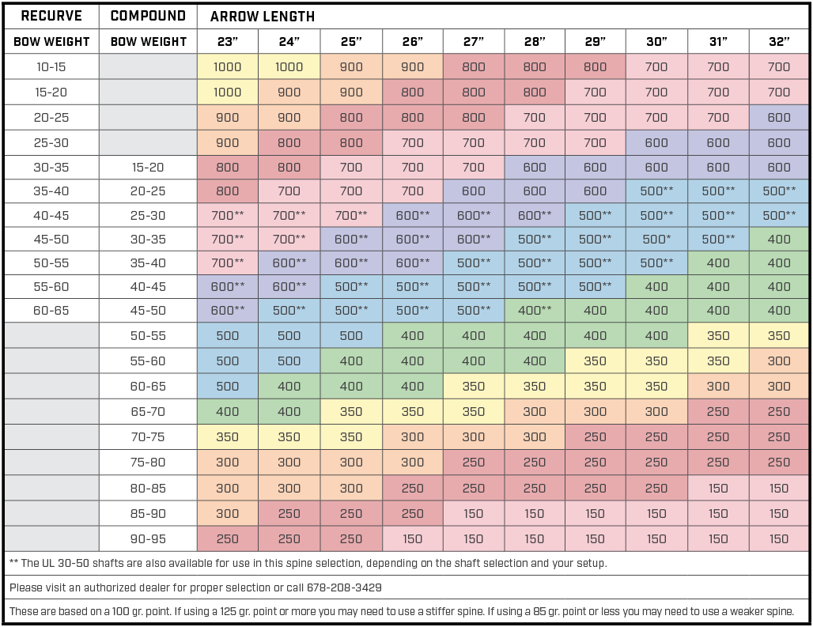
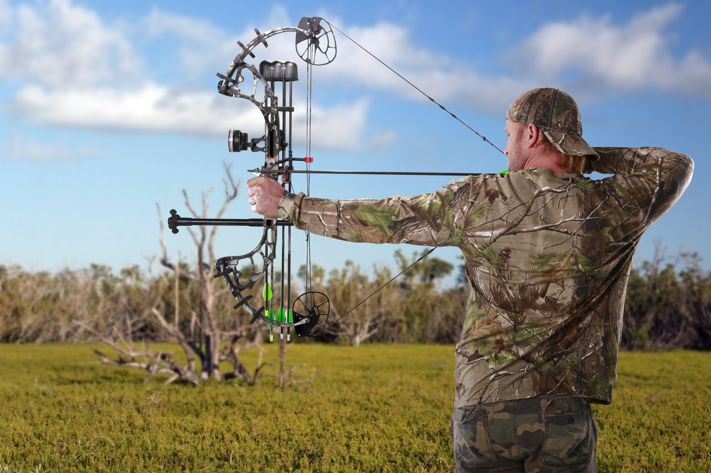
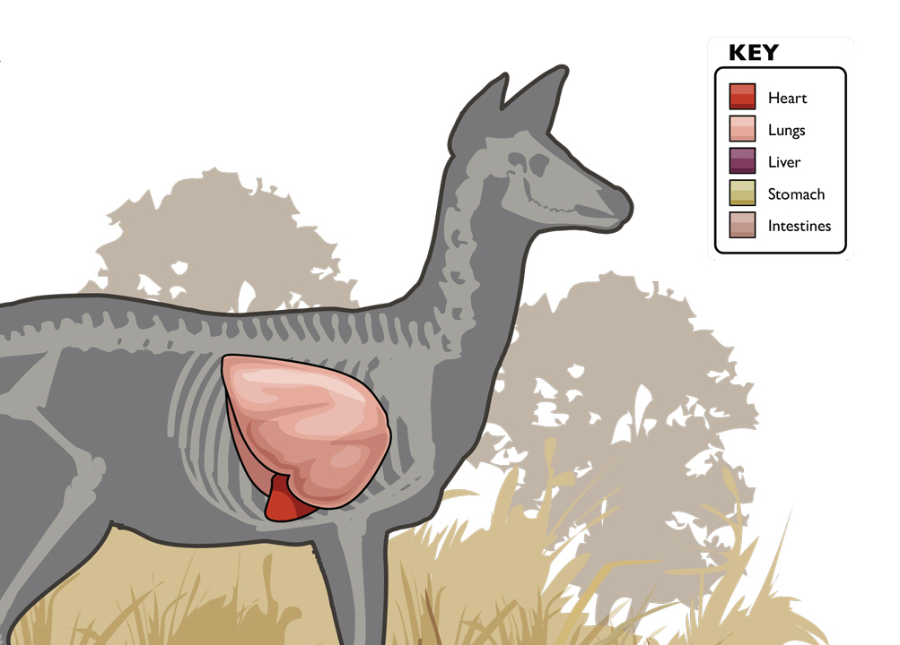
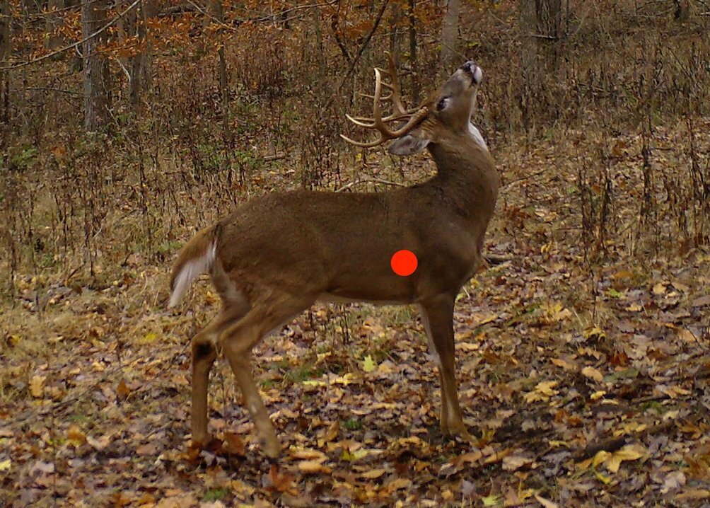

Hunting
Guns
There are a variety of different guns, but it depends on whether you are hunting small game or big game. Also make sure to get the correct ammo for the correct gun. Having the wrong ammo can put you in danger and damage or jam your guns that you spent hundreds on. Many different guns are popular with hunters, and are effective, most having some shortcomings.
Big Game Rifles
- 30-06 Springfield Rifle
- 30-30 Winchester Rifle
- .308 Winchester Rifle
- .243 Winchester Rifle
- .270 Winchester Rifle
- 7mm Remington Magnum
- 6.5 Creedmore Rifle

Bowhunting
While bowhunting may be much more complicated than rifle hunting, it is still fun. Many more factors play a role in successful bowhunting, such as arrow spine, arrow length, arrow weight, arrow FOC, broadheads, bow draw weight, bow draw length. Try not to get overwhelmed, as there are many online resources to help you along the way.
Arrow Spine, Front of Center, and Length
Spine chart sourced from Black Eagle Arrows
Arrow spine is the measure of arrow stiffness. Common measurements for hunting are 500 spine, 400, 340, and 300. The higher the draw weight, the stiffer the arrow (and lower the spine number, i.e. 340 spi.) must be to withstand the high amounts of force striving to bend or break the arrow. The wrong arrow spine can result in too much bending, affecting arrow flight, and in extreme cases, breakage. Remember that if you have to cut an arrow down, you are lowering the spine of the arrow.
Arrow Front of Center (FOC), is the percent of weight that is located in the front/broadhead side of the arrow (front half of the arrow). Arrow FOC needs to be taken into account, especially for big game hunters because the higher FOC percentage, the higher amount of penetration through the animal. For hunters, the arrow front of center percentage should be from 12% to 15% for good penetration.
Bow Draw Length Calculator
Please measure the distance between your two middle finger tips (wingspan) in inches or centimeters. You may need assistance. Then click the button to prompt the calculator.
Arrow length depends on your draw length. Your bow draw length is how far you pull back the string before you release the arrow. The longer your arms, the longer your draw length, the longer your arrow must be. Your arrow should be about 1 to 2 inches in front of the riser of the bow at full draw. Remember that the longer the arrow, the higher number (i.e., 500) spine, and the shorter the arrow is, the lower the spine (i.e., 340).
Image sourced from Tactical Huntr
Bow draw weight is essential for hunters. In most states, the minimum draw weight is either 35 or 40 lbs. 35 lbs can kill a deer, but unless you are using a fixed blade head, and have good shot placement, there is a good chance you will lose the animal. 40 lbs is about the same, and you must still be careful of shot placement. If you hit the thick, tough scapula of a deer, you are going to want as much power and kinetic energy as possible, with maximum penetration. To do this, you want a higher FOC, higher draw weight, and perhaps most importantly, a fixed blade broadhead. Make sure not to pull too high of a draw weight too early in your archery career. You will develop bad shooting habits as you struggle pulling the arrow back. You could risk back problems and shoulder pain. Start at a lower draw weight and work your way up to one that you are comfortable shooting and hunting with.
Image sourced from Advanced Hunter
Next you need to know what type of broadhead you wish to use. There are two main types for big game hunting, fixed blade broadheads, or mechanical broadheads. Fixed blade broadheads have a self-explanatory name, the blades stay in one place, and do not move at all. These broadheads are great for penetration, but they require some tuning since they fly differently from a field point. Mechanical broadheads have moving parts. There is usually a chisel type tip on the top of the head, then 2 to 4 wide blades that spread out when the broadhead hits the animal or target. Because the blades are tucked inside the broadhead until deployment, the broadhead flies consistent with the field point. This gives you accuracy similar to your common field point. However, when the mechanical broadheads hit bone, they may not deploy the blades, and result in your arrow having almost no penetration, or simply bouncing off of the animal. This is why shot placement is important with mechanicals, they do not have the power to push through bone, and sometimes they will not expand. But, whenever you make a good shot, straight at the vitals, the wide blades will cause massive damage and good arrow flight. If you want the COC (cut-on-contact) insurance of a fixed blade and a pass-through the animal, but are fine with a little tuning work, go for the fixed blades. If you just want to not have to do any tuning work, go for the mechanical broadheads for a wide cut, but possible penetration issues. This topic is controversial and mainly preference, just make sure you choose the right head for your setup.
Whitetail Shot Placement
Broadside Position
 Image (left) courtesy Bowhunting 360, Image (right) sourced from Bowhunting.com
Shot placement when hunting is very important. Not only can it affect whether you kill the animal or not, it also affects your meat. Some positions of a deer are better than others from a shooting standpoint. The very best position to shoot a deer in is a broadside shot. The vitals are the heart, lungs, and liver (though the lungs are the safest bet.) The broadside shot provides an easy shot straight through the vitals. Generally speaking, the lungs are directly behind the front shoulder, one-third to one-half of the way up the body.